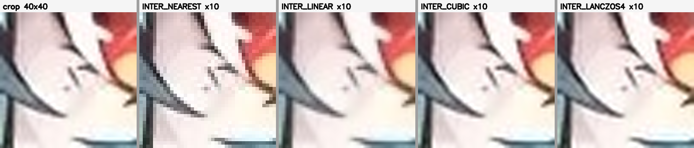
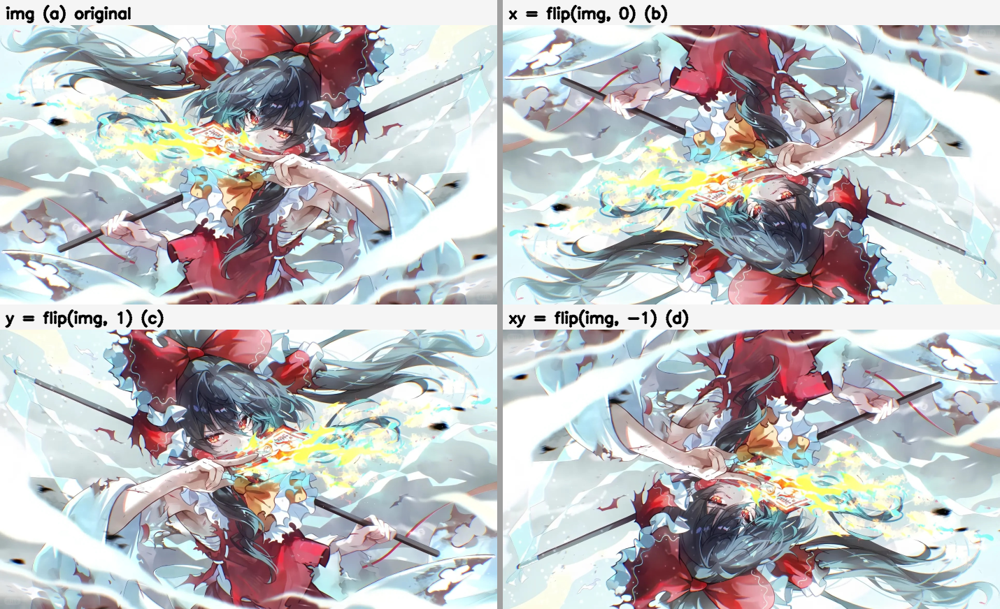
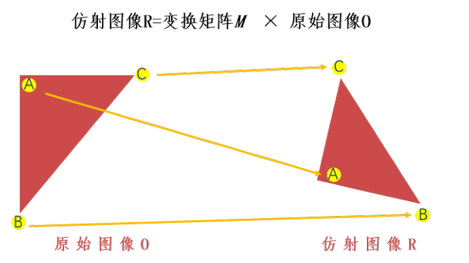
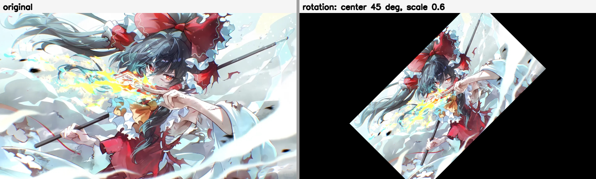
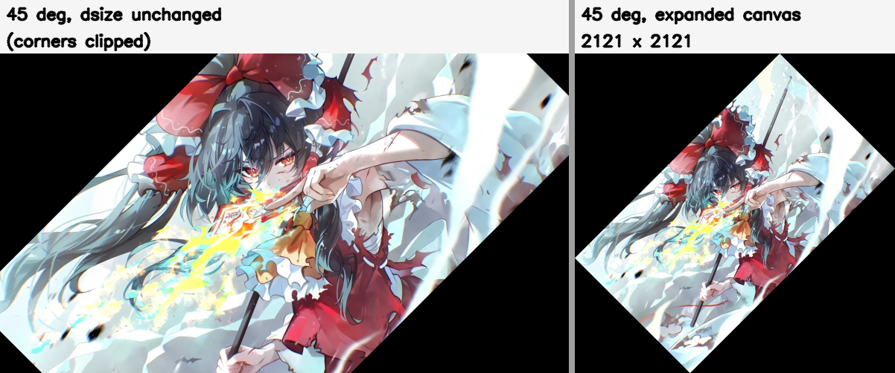
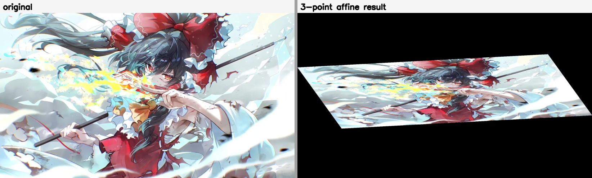
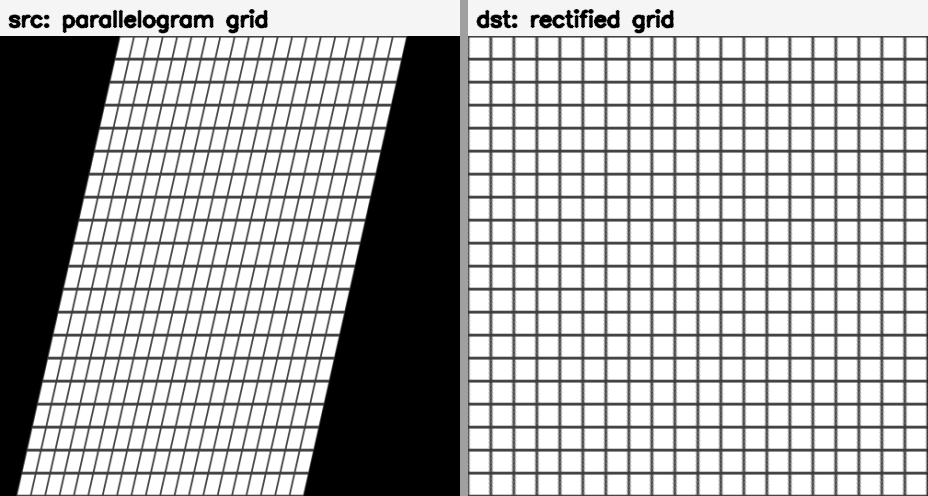
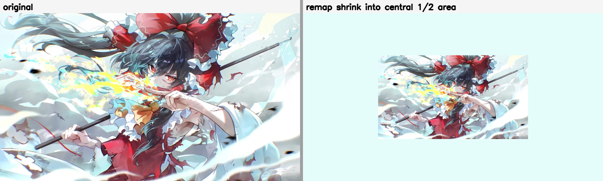
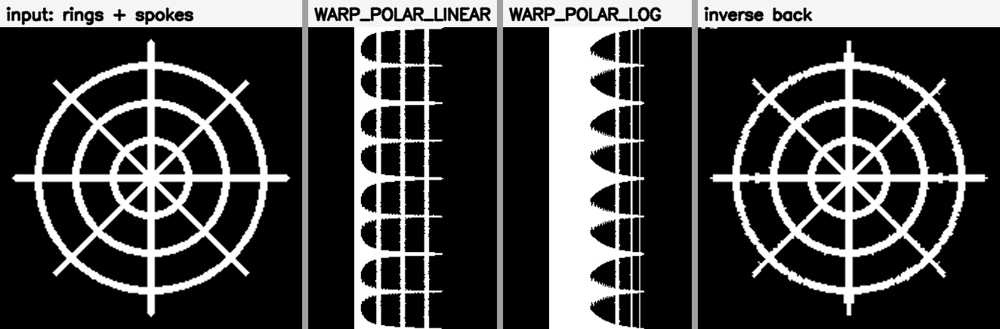

第 5 章 几何变换#
本章解决：图像的空间位置映射——把一幅图像里的像素按规则搬进另一套坐标系：放大缩小（
resize）、上下左右镜像（flip）、平移旋转（仿射变换warpAffine）、把矩形拉成任意四边形（透视变换warpPerspective）、按自定义坐标表逐点重排（remap），以及把圆形区域展开成矩形条的极坐标变换。学完本章，"变换图像"就落成一件具体的事：构造一个矩阵（或两张坐标表），交给 OpenCV 完成映射。
运行环境约定
本章代码引用本目录根下的素材，路径写作相对路径。运行时工作目录需为 数字图像处理-python 根目录，否则 imread 返回 None。原书用 lena.bmp、test.bmp、demo.bmp 演示，本章统一换成素材目录里的 picture1.jpg（1080×1920×3）顶替。代码逻辑一字未改，控制台打印的具体数值会随图片不同；个别坐标在非方图上会越界（例 5.8、例 5.20，见对应警告）。
5.0 本章导图#
5.1 缩放#
几何变换（geometric transform）是指将一幅图像映射到另外一幅图像内的操作。OpenCV 按函数把映射分成缩放、翻转、仿射、透视、重映射等几类，本节从最常用的缩放（scaling）开始。
OpenCV 用 cv2.resize() 实现缩放：
| 参数 | 含义 |
|---|---|
| dst | 输出的目标图像，类型与 src 相同，大小为 dsize（非零时）或由 src.size()、fx、fy 算出 |
| src | 需要缩放的原始图像 |
| dsize | 输出图像大小 |
| fx | 水平方向的缩放比例 |
| fy | 垂直方向的缩放比例 |
| interpolation | 插值方式，见表 5-1 |
表 5-1 插值方式
| 类型 | 说明 |
|---|---|
| cv2.INTER_NEAREST | 最邻近插值 |
| cv2.INTER_LINEAR | 双线性插值（默认方式） |
| cv2.INTER_CUBIC | 三次样条插值：对源图像附近的 4×4 近邻区域做三次样条拟合，把拟合值作为目标像素值 |
| cv2.INTER_AREA | 区域插值：根据当前像素点周边区域的像素采样，效果类似最邻近插值 |
| cv2.INTER_LANCZOS4 | 一种使用 8×8 近邻的 Lanczos 插值方法 |
| cv2.INTER_LINEAR_EXACT | 位精确双线性插值 |
| cv2.INTER_MAX | 插值编码掩码（官方文档：mask for interpolation codes） |
| cv2.WARP_FILL_OUTLIERS | 标志：填补目标图像中的所有像素；对应源图像奇异点（离群值）的像素置 0 |
| cv2.WARP_INVERSE_MAP | 标志：逆变换。极坐标变换里，未设置时按 dst(θ, ρ) = src(x, y) 转换，设置后按 dst(x, y) = src(θ, ρ) 转换（详见 5.6 节） |
原书笔误：表 5-1 的 INTER_MAX
原书把 cv2.INTER_MAX 的说明写作"差值编码掩码"，应为"插值编码掩码"（mask for interpolation codes，官方文档原文）。它是插值标志的掩码位，日常缩放用不到。同表 WARP_INVERSE_MAP 行的"∅"是极角 θ 的排版符号。
目标图像的大小有两种指定方式，二者取其一。
情况 1：通过参数 dsize 指定。只要 dsize 非 None，无论有没有给 fx、fy，目标大小都由 dsize 决定。此时 x 方向、y 方向的缩放比例为：
注意 dsize 的参数顺序：第 1 个值是宽度（width，即列数 cols，与 fx 相关），第 2 个值是高度（height，即行数 rows，与 fy 相关）。
情况 2：通过参数 fx 和 fy 指定。dsize 为 None 时，目标大小按比例计算：
插值（interpolation）解决的是"映射落空"的赋值问题。把图像放大 2 倍，必然多出一些无法直接映射到原图的像素；反向映射也可能把目标像素映射到原图的非整数位置上——原图里并不存在这样的位置。插值方式就是给这些像素定值的规则。
【例 5.1】对数组做等大小缩放，暴露 dsize 的顺序问题。
# ===== 5.1 例 5.1：dsize 传 shape[:2]，结果不是等大小 =====
import cv2
import numpy as np
img = np.ones([2, 4, 3], dtype=np.uint8) # 2 行 4 列 3 通道的全 1 数组
size = img.shape[:2] # (2, 4)：shape 里是（行, 列）
rst = cv2.resize(img, size) # dsize 却把第 1 个值当列数用
print("img.shape=\n", img.shape)
print("rst.shape=\n", rst.shape)
运行结果：
期望"等大小缩放"，结果目标图像变成 4 行 2 列——目标图像的行数等于原始图像的列数，列数等于原始图像的行数。结论：
- 在 shape 属性中，第 1 个值是行数，第 2 个值是列数；
- 在 dsize 参数中，第 1 个值是列数（宽），第 2 个值是行数（高）。
用等大小的方图测试时，这个坑完全隐形。使用 cv2.resize() 时要额外留意 dsize 的顺序。
【例 5.2】用 dsize 指定大小，横向缩到 0.9 倍、纵向缩到 0.5 倍。
# ===== 5.1 例 5.2：dsize =（新宽, 新高） =====
import cv2
img = cv2.imread("picture1.jpg") # 原书 test.bmp
rows, cols = img.shape[:2] # rows=1080, cols=1920
size = (int(cols*0.9), int(rows*0.5)) # （列数×0.9, 行数×0.5）
rst = cv2.resize(img, size)
print("img.shape=", img.shape)
print("rst.shape=", rst.shape)
运行结果（picture1.jpg）：
- 列数变为原来的 0.9 倍：1920×0.9=1728；
- 行数变为原来的 0.5 倍：1080×0.5=540。
注意 size 里写的是（cols×0.9, rows×0.5），返回 shape 却是（rows×0.5, cols×0.9）——正是例 5.1 说的顺序差。
【例 5.3】用 fx、fy 指定比例。
# ===== 5.1 例 5.3：fx 管列、fy 管行 =====
import cv2
img = cv2.imread("picture1.jpg") # 原书 test.bmp
rst = cv2.resize(img, None, fx=2, fy=0.5) # dsize 必须给 None
print("img.shape=", img.shape)
print("rst.shape=", rst.shape)
运行结果（picture1.jpg）：
- fx=2 是水平方向缩放，列数 1920×2=3840；
- fy=0.5 是垂直方向缩放，行数 1080×0.5=540。
选插值方式的经验：缩小图像用区域插值（INTER_AREA）效果最好；放大图像用三次样条（INTER_CUBIC）或双线性（INTER_LINEAR）都能取得较好效果。三次样条较慢，双线性快且效果并不逊色——所以它才是默认值。
把 picture1.jpg 眼部 40×40 的局部放大 10 倍，四种插值的差别一眼可见：

5.2 翻转#
图像翻转（flip）用 cv2.flip() 实现，支持水平翻转、垂直翻转、两方向同时翻转：
| 参数 | 含义 |
|---|---|
| dst | 与原始图像同样大小、类型的目标图像 |
| src | 要处理的原始图像 |
| flipCode | 翻转类型，见表 5-2 |
表 5-2 flipCode 参数的意义
| 参数值 | 取值 | 意义 |
|---|---|---|
| 0 | 只能是 0 | 绕 x 轴翻转（上下翻转） |
| 正数 | 1、2、3 等任意正数 | 绕 y 轴翻转（左右翻转） |
| 负数 | −1、−2、−3 等任意负数 | 绕 x 轴、y 轴同时翻转 |
目标像素点与原始像素点的对应关系（行数 rows、列数 cols，下标从 0 起）：
- flipCode = 0（绕 x 轴）：\(\text{dst}(i, j) = \text{src}(\text{rows}-1-i,\ j)\)
- flipCode > 0（绕 y 轴）：\(\text{dst}(i, j) = \text{src}(i,\ \text{cols}-1-j)\)
- flipCode < 0（双向）：\(\text{dst}(i, j) = \text{src}(\text{rows}-1-i,\ \text{cols}-1-j)\)
原书笔误：flip 公式里的 flicCode
原书公式把条件写成"flicCode = 0"，是 flipCode 的拼写错误；三个分支的映射关系本身正确，按上表理解即可。
【例 5.4】三种翻转一次看全。
# ===== 5.2 例 5.4：flipCode 取 0、1、−1 =====
import cv2
img = cv2.imread("picture1.jpg") # 原书 lena.bmp
x = cv2.flip(img, 0) # 绕 x 轴：上下翻转
y = cv2.flip(img, 1) # 绕 y 轴：左右翻转
xy = cv2.flip(img, -1) # 双向：上下 + 左右
cv2.imshow("img", img)
cv2.imshow("x", x)
cv2.imshow("y", y)
cv2.imshow("xy", xy)
cv2.waitKey()
cv2.destroyAllWindows()

四张子图对应关系一目了然：(b) 头朝下，© 脸朝右变成脸朝左的镜像，(d) 是 (b)、© 的叠加。
拓展：flip 与切片互为等价
翻转没有任何"黑科技"，就是数组反转。实测（picture1.jpg 灰度图）：
np.array_equal(cv2.flip(g, 0), g[::-1, :]) # True
np.array_equal(cv2.flip(g, 1), g[:, ::-1]) # True
np.array_equal(cv2.flip(g, -1), g[::-1, ::-1]) # True
另外表 5-2 说"任意正数/任意负数"，实际同一符号类别的效果完全一样：flipCode=2 与 1 相同、−3 与 −1 相同。
5.3 仿射#
仿射变换（affine transform）指图像通过一系列几何变换实现平移、旋转等多种操作。它保持两条性质：
- 平直性：变换后直线仍然是直线；
- 平行性：变换后平行线仍然是平行线。
OpenCV 的仿射函数是 cv2.warpAffine()，靠一个 2×3 的变换矩阵（映射矩阵）M 完成变换：

| 参数 | 含义 |
|---|---|
| dst | 仿射后的输出图像，类型与原始图像相同；dsize 决定输出图像的实际大小 |
| src | 要仿射的原始图像 |
| M | 2×3 变换矩阵，不同的 M 实现不同的仿射变换 |
| dsize | 输出图像的尺寸大小 |
| flags | 插值方法，默认 INTER_LINEAR；取 WARP_INVERSE_MAP 时 M 直接作为逆变换使用（从 dst 反查 src），可选值见表 5-1 |
| borderMode | 边界模式，默认 BORDER_CONSTANT；取 BORDER_TRANSPARENT 时目标图像内对应源图像异常值的像素不改 |
| borderValue | 边界填充值，默认 0 |
忽略可选参数后就是三件事：图、矩阵、画布大小。做哪种仿射变换，完全取决于矩阵 M。下面分别看平移、旋转和更复杂的仿射。
5.3.1 平移#
把图像向右移动 100 像素、向下移动 200 像素，即目标图 (x, y) 处的内容来自原图 (x−100, y−200)。写成映射矩阵，M 的第 3 列放平移量：
平移矩阵是通式 \(M=\begin{bmatrix}1&0&t_x\\0&1&t_y\end{bmatrix}\) 的特例：前两列保持原样（不旋转、不缩放），第 3 列负责挪动。
【例 5.5】自定义转换矩阵完成平移。
# ===== 5.3.1 例 5.5：M 第三列 =（右移量, 下移量） =====
import cv2
import numpy as np
img = cv2.imread("picture1.jpg") # 原书 lena.bmp
height, width = img.shape[:2]
x = 100 # 右移 100
y = 200 # 下移 200
M = np.float32([[1, 0, x], [0, 1, y]]) # 2×3 平移矩阵
move = cv2.warpAffine(img, M, (width, height)) # dsize 仍是（宽, 高）
cv2.imshow("original", img)
cv2.imshow("move", move)
cv2.waitKey()
cv2.destroyAllWindows()
拓展：M 到底是「正向」还是「逆向」
官方文档的公式 \(\text{dst}(x,y)=\text{src}(M_{11}x+M_{12}y+M_{13},\ldots)\) 描述的是"从目标图坐标反查原图坐标"。默认情况下 OpenCV 先把 M 当正向变换求逆，再代入这个公式。所以 M 第三列是正数时，内容向右/向下移动（实测：M=[[1,0,100],[0,1,50]] 时，mv[150,250] == img[100,150] 为 True）。一旦加了 WARP_INVERSE_MAP 标志，公式直接用 M 本身，同样的 M 方向全反。记忆口径：第三列正数 = 内容往右、往下跑。原书推导里"dst(x,y)=src(x+100,y+200)"一句是按公式字面写的，结论（右移、下移）与实际运行一致，中间等式的方向在默认模式下并不成立。
5.3.2 旋转#
旋转不需要手写矩阵，cv2.getRotationMatrix2D() 直接生成：
| 参数 | 含义 |
|---|---|
| center | 旋转的中心点，(x, y) 坐标 |
| angle | 旋转角度，正数逆时针，负数顺时针 |
| scale | 变换尺度（缩放大小） |
以图像中心为圆点、逆时针旋转 45°、目标缩至 0.6 倍，生成矩阵的语句是：
原书笔误：旋转中心参数顺序
原书正文把这句写作 M=cv2.getRotationMatrix2D((height/2,width/2),45,0.6)，中心点写成了（高/2, 宽/2）。center 是 (x, y) 坐标，应写（宽/2, 高/2），即 (width/2, height/2)——例 5.6 的代码是对的，正文那行是笔误。
【例 5.6】图像旋转。
# ===== 5.3.2 例 5.6：中心旋转 45°，缩至 0.6 =====
import cv2
img = cv2.imread("picture1.jpg") # 原书 lena.bmp
height, width = img.shape[:2]
M = cv2.getRotationMatrix2D((width/2, height/2), 45, 0.6)
rotate = cv2.warpAffine(img, M, (width, height))
cv2.imshow("original", img)
cv2.imshow("rotation", rotate)
cv2.waitKey()
cv2.destroyAllWindows()

拓展：getRotationMatrix2D 返回值的解析形式
实测 (center=(200,200), angle=45, scale=0.6) 得到：
它来自官方文档的解析式：
对照：0.4243 = 0.6·cos45°；平移列 (1−2×0.4243)×200 = 30.29、(0.4243+0.5757)×200 = 200，与实测完全吻合。方向实测：12 点方向放一个白点，+90° 后落在 9 点方向（逆时针），−90° 后落在 3 点方向（顺时针）——"正角逆时针"可靠。
拓展：旋转 45° 不裁边的扩画布技巧
例 5.6 的画布仍是原图大小，转出画布的四角内容直接变黑。想完整保留，就把 dsize 扩到能装下整个旋转外接矩形，并补偿平移列（补充技巧，非原书内容）：
# ===== 5.3.2 拓展：扩画布旋转 =====
M = cv2.getRotationMatrix2D((w/2, h/2), 45, 1.0)
cos = abs(M[0, 0]) # |cos45°|
sin = abs(M[0, 1]) # |sin45°|
nw = int(h*sin + w*cos) # 新画布宽
nh = int(h*cos + w*sin) # 新画布高
M[0, 2] += nw/2 - w/2 # 平移列补回中心
M[1, 2] += nh/2 - h/2
rst = cv2.warpAffine(img, M, (nw, nh))
实测 picture1.jpg（1080×1920）扩画布旋转 45° 后得到 2121×2121，内容完整、无黑边。

5.3.3 更复杂的仿射变换#
平移和旋转的矩阵有固定套路，更一般的仿射（如剪切、拉伸）用 cv2.getAffineTransform() 求矩阵：
| 参数 | 含义 |
|---|---|
| src | 输入图像的三个点坐标 |
| dst | 输出图像的三个点坐标 |
src、dst 是各含三个 (x, y) 点的数组，三点分别对应一个平行四边形的左上角、右上角、左下角。三点确定一个 2×3 矩阵（6 个未知数、6 个方程），warpAffine() 以它为参数把 src 中的点仿射到 dst；其余点的映射关系按这三点的关系推算。
【例 5.7】三点法仿射。
# ===== 5.3.3 例 5.7：三个点对生成任意仿射 =====
import cv2
import numpy as np
img = cv2.imread("picture1.jpg") # 原书 lena.bmp
rows, cols, ch = img.shape
p1 = np.float32([[0, 0], [cols-1, 0], [0, rows-1]]) # 原图三个顶点
p2 = np.float32([[0, rows*0.33], [cols*0.85, rows*0.25],
[cols*0.15, rows*0.7]]) # 目标三个顶点
M = cv2.getAffineTransform(p1, p2) # 2×3 矩阵
dst = cv2.warpAffine(img, M, (cols, rows))
cv2.imshow("original", img)
cv2.imshow("result", dst)
cv2.waitKey()
cv2.destroyAllWindows()

矩阵正确性的验证办法很直接：把 M 作用到 p1 各点的齐次坐标 \(M\cdot[x,y,1]^{\mathsf T}\)，逐一等于 p2 的对应点（实测成立）。想设计"斜切"效果，改 p2 三个点即可，不必自己推矩阵。
5.4 透视#
仿射能把矩形映成任意平行四边形；透视变换（perspective transform）更进一步，能把矩形映成任意四边形——平行性不再保证，这正是拍照时"近大远小"的几何模型。
| 参数 | 含义 |
|---|---|
| dst | 透视处理后的输出图像，类型与原始图像相同；dsize 决定输出大小 |
| src | 要透视的原始图像 |
| M | 3×3 变换矩阵 |
| dsize | 输出图像的尺寸大小 |
| flags | 插值方法，默认 INTER_LINEAR；取 WARP_INVERSE_MAP 时 M 为逆变换，可选值见表 5-1 |
| borderMode | 边界模式，默认 BORDER_CONSTANT；取 BORDER_TRANSPARENT 时对应源图像异常值的目标像素不修改 |
| borderValue | 边界值，默认 0 |
矩阵同样不用手写，cv2.getPerspectiveTransform() 由四对点生成：
| 参数 | 含义 |
|---|---|
| src | 输入图像四个顶点的坐标 |
| dst | 输出图像四个顶点的坐标 |
注意 src、dst 是四个点的数组，与仿射的三个点不同。实际使用中可以控制 src 的四个点映射到 dst 的四个点。
【例 5.8】把平行四边形矫正成矩形。
# ===== 5.4 例 5.8：四点对生成 3×3 透视矩阵 =====
import cv2
import numpy as np
img = cv2.imread("picture1.jpg") # 原书 demo.bmp
rows, cols = img.shape[:2]
print(rows, cols)
pts1 = np.float32([[150, 50], [400, 50], [60, 450], [310, 450]]) # 原图四边形顶点
pts2 = np.float32([[50, 50], [rows-50, 50],
[50, cols-50], [rows-50, cols-50]]) # 目标矩形顶点（原书写法）
M = cv2.getPerspectiveTransform(pts1, pts2) # 3×3 矩阵
dst = cv2.warpPerspective(img, M, (cols, rows))
cv2.imshow("img", img)
cv2.imshow("dst", dst)
cv2.waitKey()
cv2.destroyAllWindows()

原书笔误：例 5.8 的 pts2 混用了 rows 与 cols
原书 pts2 = np.float32([[50,50],[rows-50,50],[50,cols-50],[rows-50,cols-50]])——x 坐标里放 rows、y 坐标里放 cols，方向反了（x 该看列数 cols、y 该看行数 rows）。原书 demo.bmp 恰好是方图，碰巧看不出问题；换成 1080×1920 的 picture1.jpg 后，矩形下边 y 最大到 cols−50=1870，越过 1080 行的画布底部，内容被裁。稳妥写法：
拓展：为什么透视矩阵是 3×3
仿射是线性变换，2×3 就够；透视多了一步"除法"，要靠齐次坐标（homogeneous coordinates）实现：
正是除以 s 这个非线性步骤让平行线可以相交于一点（"近大远小"）。实测：M 作用于例 5.8 的 pts1 四点并除以 s，逐一等于 pts2 的对应点。3×3 矩阵有 9 个元素、8 个自由度，所以恰好需要四对点。
5.5 重映射#
重映射（remap）把一幅图像内的像素点放置到另一幅图像内的指定位置。OpenCV 自带多种重映射方式，cv2.remap() 则提供自定义接口：
| 参数 | 含义 |
|---|---|
| dst | 目标图像，与 src 大小、类型相同 |
| src | 原始图像 |
| map1 | 两种取值：表示 (x, y) 点的一个映射；或 CV_16SC2、CV_32FC1、CV_32FC2 类型的 (x, y) 点的 x 值 |
| map2 | map1 表示 (x, y) 时该值为空；map1 表示 x 值时，它是 CV_16UC1、CV_32FC1 类型的 y 值 |
| interpolation | 插值方式，不支持 INTER_AREA，可选值见表 5-1 |
| borderMode | 边界模式；取 BORDER_TRANSPARENT 时对应源图像奇异点（outliers）的目标像素不修改 |
| borderValue | 边界值，默认 0 |
5.5.1 映射参数的理解#
重映射靠修改像素位置造新图，核心问题是：**新图像的每个像素去原图的哪里取值？**这个"查来源"的过程称为反向映射（inverse mapping）。map1 针对 x 坐标、map2 针对 y 坐标，通常写成 mapx、mapy。
- mapx 存的是列号，mapy 存的是行号。想把目标图 A 点映为原图第 0 行第 3 列的像素 B，就把 A 处的 mapx 设为 3、mapy 设为 0；
- mapx、mapy 都是浮点数，所以目标可以"反向映射"到原图两个像素之间的位置（这个位置本没有像素值），由 interpolation 参数插值定值；
- 正因为允许浮点，映射关系可以任意自定义——缩放、翻转、畸变都只是它的特例。
【例 5.9】把目标数组的所有点都映射到原图同一个点。
# ===== 5.5.1 例 5.9：常量映射表 =====
import cv2
import numpy as np
img = np.random.randint(0, 256, size=[4, 5], dtype=np.uint8) # 4 行 5 列随机数组
rows, cols = img.shape
mapx = np.ones(img.shape, np.float32) * 3 # 所有位置的列号都是 3
mapy = np.ones(img.shape, np.float32) * 0 # 所有位置的行号都是 0
rst = cv2.remap(img, mapx, mapy, cv2.INTER_LINEAR)
print("img=\n", img)
print("rst=\n", rst)
运行结果示例（随机数组，每次不同）：
img=
[[120 183 101 252 219]
[ 51 106 168 221 118]
[147 16 3 14 159]
[219 67 254 16 62]]
rst=
[[252 252 252 252 252]
[252 252 252 252 252]
[252 252 252 252 252]
[252 252 252 252 252]]
mapx 全 3、mapy 全 0，目标图每个位置都取原图第 0 行第 3 列的 252。
5.5.2 复制#
让 mapx 取各位置的列号、mapy 取各位置的行号，映射就是"原样照搬"，即复制。
先看这条：itemset 已经不存在
本节例 5.10~5.20 原书用 mapx.itemset((i, j), 值) 写映射表。NumPy 2.0 起该方法已删除，实测 numpy 2.2.6 直接抛：
AttributeError: `itemset` was removed from the ndarray class in NumPy 2.0.
Use `arr[index] = value` instead.
等价写法是 mapx[i, j] = 值。下面例题按新写法给出，注释里标出原书写法；mapx、mapy 这两个变量名沿用原书，便于理解。
【例 5.10】数组复制。
# ===== 5.5.2 例 5.10：列号表 + 行号表 = 复制 =====
import cv2
import numpy as np
img = np.random.randint(0, 256, size=[4, 5], dtype=np.uint8)
rows, cols = img.shape
mapx = np.zeros(img.shape, np.float32)
mapy = np.zeros(img.shape, np.float32)
for i in range(rows):
for j in range(cols):
mapx[i, j] = j # 原书：mapx.itemset((i,j), j)——列号
mapy[i, j] = i # 原书：mapy.itemset((i,j), i)——行号
rst = cv2.remap(img, mapx, mapy, cv2.INTER_LINEAR)
print("rst=\n", rst)
运行后 rst 与 img 完全相等。以 rst[3, 4] 为例：其 x 坐标由 mapx[3,4]=4 决定、y 坐标由 mapy[3,4]=3 决定，即取自 src 第 4 列第 3 行——正是 src[3,4] 本身。
【例 5.11】图像复制。
# ===== 5.5.2 例 5.11：真实图像上的复制映射 =====
import cv2
import numpy as np
img = cv2.imread("picture1.jpg") # 原书 lena.bmp
rows, cols = img.shape[:2]
mapx = np.zeros(img.shape[:2], np.float32)
mapy = np.zeros(img.shape[:2], np.float32)
for i in range(rows):
for j in range(cols):
mapx[i, j] = j # 列号表
mapy[i, j] = i # 行号表
rst = cv2.remap(img, mapx, mapy, cv2.INTER_LINEAR)
cv2.imshow("original", img)
cv2.imshow("result", rst)
cv2.waitKey()
cv2.destroyAllWindows()
拓展：映射表不必逐点循环
例 5.10 的双重循环可以用广播一行生成，实测结果与循环版逐像素相等：
mapx = np.tile(np.arange(cols, dtype=np.float32), (rows, 1)) # 每行都是 0..cols-1
mapy = np.repeat(np.arange(rows, dtype=np.float32)[:, None], cols, axis=1)
循环版教学价值在于"每格存什么"一目了然；工程里用 tile/meshgrid 更快。
5.5.3 绕 x 轴翻转#
绕 x 轴翻转：x 坐标（列）不变，y 坐标（行）以 x 轴为对称轴交换。反映到映射表上：
- mapx 不变（仍是列号）；
- mapy 调整为"总行数 − 1 − 当前行号"。
行号从 0 起，所以"当前行号 + 对称行号 = 总行数 − 1"。
【例 5.12】数组绕 x 轴翻转。
# ===== 5.5.3 例 5.12：mapy 行号倒置 =====
import cv2
import numpy as np
img = np.random.randint(0, 256, size=[4, 5], dtype=np.uint8)
rows, cols = img.shape
mapx = np.zeros(img.shape, np.float32)
mapy = np.zeros(img.shape, np.float32)
for i in range(rows):
for j in range(cols):
mapx[i, j] = j # 列号不变
mapy[i, j] = rows - 1 - i # 原书：mapy.itemset((i,j), rows-1-i)
rst = cv2.remap(img, mapx, mapy, cv2.INTER_LINEAR)
print("rst=\n", rst)
4 行数组的 mapy 依次是 3、2、1、0——第 0 行去取原图第 3 行，实测 rst 与 img[::-1, :] 完全相等。
【例 5.13】图像绕 x 轴翻转。
# ===== 5.5.3 例 5.13：图像绕 x 轴翻转 =====
import cv2
import numpy as np
img = cv2.imread("picture1.jpg") # 原书 lena.bmp
rows, cols = img.shape[:2]
mapx = np.zeros(img.shape[:2], np.float32)
mapy = np.zeros(img.shape[:2], np.float32)
for i in range(rows):
for j in range(cols):
mapx[i, j] = j
mapy[i, j] = rows - 1 - i
rst = cv2.remap(img, mapx, mapy, cv2.INTER_LINEAR)
cv2.imshow("original", img)
cv2.imshow("result", rst)
cv2.waitKey()
cv2.destroyAllWindows()
5.5.4 绕 y 轴翻转#
绕 y 轴翻转：y 坐标（行）不变，x 坐标（列）以 y 轴为对称轴交换：
- mapy 不变（仍是行号）；
- mapx 调整为"总列数 − 1 − 当前列号"。
【例 5.14】数组绕 y 轴翻转。
# ===== 5.5.4 例 5.14：mapx 列号倒置 =====
import cv2
import numpy as np
img = np.random.randint(0, 256, size=[4, 5], dtype=np.uint8)
rows, cols = img.shape
mapx = np.zeros(img.shape, np.float32)
mapy = np.zeros(img.shape, np.float32)
for i in range(rows):
for j in range(cols):
mapx[i, j] = cols - 1 - j # 原书：mapx.itemset((i,j), cols-1-j)
mapy[i, j] = i # 行号不变
rst = cv2.remap(img, mapx, mapy, cv2.INTER_LINEAR)
print("rst=\n", rst)
mapx 每行都是 4、3、2、1、0，实测 rst 与 img[:, ::-1] 完全相等。
【例 5.15】图像绕 y 轴翻转。
# ===== 5.5.4 例 5.15：图像绕 y 轴翻转 =====
import cv2
import numpy as np
img = cv2.imread("picture1.jpg") # 原书 lena.bmp
rows, cols = img.shape[:2]
mapx = np.zeros(img.shape[:2], np.float32)
mapy = np.zeros(img.shape[:2], np.float32)
for i in range(rows):
for j in range(cols):
mapx[i, j] = cols - 1 - j
mapy[i, j] = i
rst = cv2.remap(img, mapx, mapy, cv2.INTER_LINEAR)
cv2.imshow("original", img)
cv2.imshow("result", rst)
cv2.waitKey()
cv2.destroyAllWindows()
5.5.5 绕 x 轴、y 轴翻转#
两个轴一起翻：x 坐标以 y 轴为对称交换，y 坐标以 x 轴为对称交换：
- mapx 调整为"总列数 − 1 − 当前列号"；
- mapy 调整为"总行数 − 1 − 当前行号"。
【例 5.16】数组绕 x 轴、y 轴翻转。
# ===== 5.5.5 例 5.16：两张表同时倒置 =====
import cv2
import numpy as np
img = np.random.randint(0, 256, size=[4, 5], dtype=np.uint8)
rows, cols = img.shape
mapx = np.zeros(img.shape, np.float32)
mapy = np.zeros(img.shape, np.float32)
for i in range(rows):
for j in range(cols):
mapx[i, j] = cols - 1 - j
mapy[i, j] = rows - 1 - i
rst = cv2.remap(img, mapx, mapy, cv2.INTER_LINEAR)
print("rst=\n", rst)
实测 rst 与 img[::-1, ::-1] 完全相等，即 cv2.flip(img, −1) 的效果。
【例 5.17】图像绕 x 轴、y 轴翻转。
# ===== 5.5.5 例 5.17：图像双向翻转 =====
import cv2
import numpy as np
img = cv2.imread("picture1.jpg") # 原书 lena.bmp
rows, cols = img.shape[:2]
mapx = np.zeros(img.shape[:2], np.float32)
mapy = np.zeros(img.shape[:2], np.float32)
for i in range(rows):
for j in range(cols):
mapx[i, j] = cols - 1 - j
mapy[i, j] = rows - 1 - i
rst = cv2.remap(img, mapx, mapy, cv2.INTER_LINEAR)
cv2.imshow("original", img)
cv2.imshow("result", rst)
cv2.waitKey()
cv2.destroyAllWindows()
5.5.6 x 轴、y 轴互换#
x 轴、y 轴互换：每个点的 x、y 坐标互换，即转置：
- mapx 调整为所在位置的行号；
- mapy 调整为所在位置的列号。
行数和列数不一致时，部分位置无法映射（比如 4 行 6 列的图转置后需要 6 行，画布只有 4 行），默认情况下这些位置处理为 0。
【例 5.18】数组 x 轴、y 轴互换。
# ===== 5.5.6 例 5.18：非方图转置，越界补 0 =====
import cv2
import numpy as np
img = np.random.randint(0, 256, size=[4, 6], dtype=np.uint8) # 故意 4 行 6 列
rows, cols = img.shape
mapx = np.zeros(img.shape, np.float32)
mapy = np.zeros(img.shape, np.float32)
for i in range(rows):
for j in range(cols):
mapx[i, j] = i # 原书：mapx.itemset((i,j), i)——行号当 x
mapy[i, j] = j # 原书：mapy.itemset((i,j), j)——列号当 y
rst = cv2.remap(img, mapx, mapy, cv2.INTER_LINEAR)
print("rst=\n", rst)
运行结果示例：
4 行 6 列的图转置需要 6 行，画布只有 4 行：右侧两列没有任何来源，全部补 0；左侧 4×4 恰是原图的转置（实测与 img.T 的对应区域相等）。
【例 5.19】图像 x 轴、y 轴互换。
# ===== 5.5.6 例 5.19：图像转置 =====
import cv2
import numpy as np
img = cv2.imread("picture1.jpg") # 原书 lena.bmp
rows, cols = img.shape[:2]
mapx = np.zeros(img.shape[:2], np.float32)
mapy = np.zeros(img.shape[:2], np.float32)
for i in range(rows):
for j in range(cols):
mapx[i, j] = i
mapy[i, j] = j
rst = cv2.remap(img, mapx, mapy, cv2.INTER_LINEAR)
cv2.imshow("original", img)
cv2.imshow("result", rst)
cv2.waitKey()
cv2.destroyAllWindows()
5.5.7 图像缩放#
前面几节都是整数映射，remap 的真正威力在浮点映射。例 5.20 用"取样步长为 2"的映射把图像缩小一半，并固定在画布中心区域：
- 目标图 x 轴、y 轴的 (0.25·长度, 0.75·长度) 区间内生成缩小图像；
- 区域外的点统一取 (0, 0) 坐标的值。
【例 5.20】remap 缩小图像。
# ===== 5.5.7 例 5.20：中心区域显示缩小图 =====
import cv2
import numpy as np
img = cv2.imread("picture1.jpg") # 原书 lena.bmp
rows, cols = img.shape[:2]
mapx = np.zeros(img.shape[:2], np.float32)
mapy = np.zeros(img.shape[:2], np.float32)
for i in range(rows):
for j in range(cols):
# 原书条件写作 0.25*cols < i < 0.75*cols and 0.25*rows < j < 0.75*rows
if 0.25*rows < i < 0.75*rows and 0.25*cols < j < 0.75*cols:
mapx[i, j] = 2*(j - cols*0.25) + 0.5 # 原书：mapx.itemset(...)
mapy[i, j] = 2*(i - rows*0.25) + 0.5 # 原书：mapy.itemset(...)
else:
mapx[i, j] = 0
mapy[i, j] = 0
rst = cv2.remap(img, mapx, mapy, cv2.INTER_LINEAR)
cv2.imshow("original", img)
cv2.imshow("result", rst)
cv2.waitKey()
cv2.destroyAllWindows()

映射逻辑：中心区域里，目标每前进 1 像素，取样位置前进 2 像素（2*(j - cols*0.25) + 0.5），所以显示的是缩到一半的图；取样起点加 0.5 是为了让取样位置落在像素中心。区域外的点全部指向 (0, 0)，于是四周显示同一个像素值。
原书笔误：例 5.20 的判断条件
原书条件写作 0.25*cols < i < 0.75*cols and 0.25*rows < j < 0.75*rows——i 是行号却与 cols 比，j 是列号却与 rows 比。lena 是 512×512 的方图，两组条件等价，结果碰巧正确；非方图上会选错区域。正确写法见上面代码：行号与 rows 比、列号与 cols 比。它与例 5.8 的 pts2 是同一类问题：x 方向看 cols，y 方向看 rows。
拓展：remap 是万能底座
复制、翻转、转置、缩放，全都只是给 mapx、mapy 填不同数值——resize、flip 内部做的也是同样的反向映射加插值。remap 的价值在于映射表可以任意自定义：桶形畸变校正、波浪扭曲、把圆展开成条（5.6 节）都靠它。设计映射时只回答一个问题：目标图的 (i, j) 去原图哪里取值。
5.6 极坐标变换（拓展）#
本节是补充内容：原书本章只在表 5-1 的 WARP_INVERSE_MAP 行举例提到极坐标变换（dst(θ, ρ) = src(x, y)，原书把 θ 排成了"∅"），没有展开。以下按 OpenCV 官方文档整理。
极坐标变换（polar transform）把以 center 为圆心的圆形区域展开成"角度 × 半径"的矩形：横轴变成角度（一圈 360°），纵轴变成半径。圆环展开成横带、表盘指针的角度一目了然，是矫正圆形文字、分析径向分布的常用起手式。核心函数：
| 参数 | 含义 |
|---|---|
| src | 源图像 |
| dsize | 目标图尺寸：width 是半径轴（列），height 是角度轴（行） |
| center | 极坐标变换中心 |
| maxRadius | 边界圆半径，角度轴覆盖一整圈 360° |
| flags | 插值方式 + 极坐标模式：WARP_POLAR_LINEAR（线性极坐标，值 0）、WARP_POLAR_LOG（半对数极坐标，值 256），可选叠加 WARP_INVERSE_MAP（值 16）做逆变换 |
dsize 有自动约定：两个值都 ≤0 时，dsize.width = round(maxRadius)、dsize.height = round(maxRadius·π)（角度系数 Kangle = dsize.height/2π，半径系数 Klin = dsize.width/maxRadius）；只给 width 时 height 自动取 width·π。LOG 模式的半径轴改用对数刻度（Klog = dsize.width/ln(maxRadius)），中心附近的分辨率更高。
# ===== 5.6 拓展：圆环展开成横带 =====
import cv2
import numpy as np
img = np.zeros((201, 201), np.uint8)
cv2.circle(img, (100, 100), 50, 255, 6) # 以 (100,100) 为圆心画半径 50 的白圆环
# dsize 传 (0,0)：自动取（round(100), round(100·π)）= (100, 314)
pol = cv2.warpPolar(img, (0, 0), (100, 100), 100, cv2.WARP_POLAR_LINEAR)
print(pol.shape) # (314, 100)：314 行是角度，100 列是半径
# 环上所有点的半径都是 50 → 聚成第 50 列附近的一条横向亮带
print(bool((pol[:, 48:53] > 200).all())) # True
# 逆变换：flags 叠加 WARP_INVERSE_MAP，把极坐标图还原回直角坐标
back = cv2.warpPolar(pol, (201, 201), (100, 100), 100,
cv2.WARP_POLAR_LINEAR + cv2.WARP_INVERSE_MAP)
实测：pol 形状 (314, 100)，第 50 列附近整列全亮（圆环展开成横跨全部角度的一条横带）；back 的中心 30×30 区域与原图逐像素一致。反过来想：极坐标图里"一条横带"就是原图里"一个圆环"，"一条竖带"就是"一条射线"。
把"同心圆环 + 8 根辐条"的测试图交给 warpPolar，这种对应关系一目了然：

拓展：linearPolar 与 logPolar 是旧接口
cv2.linearPolar（线性极坐标）与 cv2.logPolar（半对数极坐标）在官方文档中已标注废弃：linearPolar 等价于 warpPolar(src, dst, src.size(), center, maxRadius, flags)，logPolar 等价于在 flags 上再加 WARP_POLAR_LOG。新代码一律用 warpPolar。若维护旧代码要注意：这两个旧函数的 Python 签名是 (src, center, M, flags)——center 在前，与 warpPolar 的参数顺序不同。实测两者在 OpenCV 4.13 中仍可运行。另外 warpPolar 不能原地变换，图像也不能超过 32767×32767。
坑与陷阱#
8 个容易踩的坑
- dsize 是（宽, 高），shape 是（行, 列）：例 5.1 里 (2, 4, 3) 的数组把 shape[:2] 当 dsize 传入，得到 (4, 2, 3)——行列互换。等大小的方图测不出这个坑，写
dsize=(cols, rows)才稳。 - M 的第三列是"内容往哪跑"：warpAffine 默认先对 M 求逆再映射，[[1,0,100],[0,1,200]] 把内容右移 100、下移 200；加了 WARP_INVERSE_MAP 后同样的 M 方向全反。别背公式，记住"第三列正数 = 内容向右、向下"。
- itemset 已被 NumPy 2.0 移除：remap 系列例题原书全用它，numpy 2.2.6 实测直接 AttributeError。改成
mapx[i, j] = 值，或用 tile/meshgrid 一次生成整张表。 - mapx 是列、mapy 是行：写反会得到转置或镜像。记忆：mapx 里存的是 x 坐标，而图像里 x 方向是列。
- remap 越界不报错：映射到原图外的位置统一填 borderValue（默认 0），例 5.18 右侧两列的黑边就是这么来的。大片黑边基本是映射范围算错。
- 旋转会裁边：warpAffine 的 dsize 仍是原图大小时，转出画布的内容直接丢失（45° 四角黑边）。要完整保留就扩画布并补偿平移列（5.3.2 拓展）。
- rows/cols 混用只在方图成立：例 5.8 的 pts2、例 5.20 的判断条件都把两个量交叉使用，lena 是方图碰巧对；1080×1920 的真图立刻越界。x 方向看 cols，y 方向看 rows。
- 插值别乱选：缩小首选 INTER_AREA，放大用 INTER_CUBIC 或 INTER_LINEAR；remap 文档明确不支持 INTER_AREA（新版实测传入不报错，属未定义行为，别依赖）。
速览#
cv2.resize(src, dsize, fx, fy, interpolation)：给了 dsize 就一切由它决定（dsize 是宽在前、高在后）；dsize=None 时按 fx、fy 计算，dsize = round(fx·cols), round(fy·rows)。- 插值解决"映射不到整数的像素"：缩小首选 INTER_AREA；放大用 INTER_CUBIC（慢而好）或 INTER_LINEAR（默认、快）。
cv2.flip(src, flipCode)：0 绕 x 轴上下翻、正数绕 y 轴左右翻、负数双向翻；与切片img[::-1, ::-1]等价。- 仿射
cv2.warpAffine(src, M, dsize)：M 是 2×3 矩阵，\(\text{dst}(x,y)=\text{src}(M_{11}x+M_{12}y+M_{13},\ M_{21}x+M_{22}y+M_{23})\)；平移矩阵 \(\begin{bmatrix}1&0&t_x\\0&1&t_y\end{bmatrix}\)，第三列正数 = 内容右移、下移。 - 旋转
cv2.getRotationMatrix2D(center, angle, scale)：center 是 (x, y) =（宽/2, 高/2）；angle 正数逆时针、负数顺时针；返回 2×3 矩阵交给 warpAffine。 - 任意仿射
cv2.getAffineTransform(src, dst)：三对点（平行四边形左上、右上、左下）确定 2×3 矩阵。 - 透视
cv2.warpPerspective+cv2.getPerspectiveTransform：四对点确定 3×3 矩阵（齐次坐标），能把矩形映成任意四边形。 - 重映射
cv2.remap(src, mapx, mapy, interpolation)：mapx 存列号、mapy 存行号，浮点映射自动插值；越界补 0；复制、翻转、转置都是它的特例。 - x、y 轴互换 = 转置：mapx 填行号、mapy 填列号；非方图上无法映射的位置补 0。
- 极坐标
cv2.warpPolar(src, dsize, center, maxRadius, flags)：WARP_POLAR_LINEAR（值 0）线性展开、WARP_POLAR_LOG（值 256）半对数，flags 加 WARP_INVERSE_MAP（值 16）可逆变换；linearPolar/logPolar 已废弃。
术语速查#
| 英文 / 函数 | 中文 | 一句话 |
|---|---|---|
| geometric transform | 几何变换 | 把一幅图像映射到另一幅图像内的操作 |
| scaling | 缩放 | cv2.resize，改变图像大小 |
| interpolation | 插值 | 给映射不到整数的像素定值的规则 |
| INTER_NEAREST | 最邻近插值 | 直接取最近像素，快但呈块状 |
| INTER_LINEAR | 双线性插值 | 默认方式，2×2 邻域加权 |
| INTER_CUBIC | 三次样条插值 | 4×4 邻域拟合，放大质量好、速度慢 |
| INTER_AREA | 区域插值 | 按周边区域采样，缩小首选 |
| INTER_LANCZOS4 | Lanczos 插值 | 8×8 近邻，质量与开销都高 |
| flip | 翻转 | cv2.flip，绕 x/y 轴镜像 |
| flipCode | 翻转控制符 | 0 上下翻、正数左右翻、负数双向 |
| affine transform | 仿射变换 | 保持平直性与平行性的变换 |
| transformation matrix | 变换矩阵 | 也叫映射矩阵 M，决定变换类型 |
| warpAffine | 仿射变换函数 | 按矩阵 M 重排整幅图像 |
| getRotationMatrix2D | 旋转矩阵构造 | center、angle、scale 生成 2×3 矩阵 |
| getAffineTransform | 三点仿射矩阵 | 三对点确定 2×3 矩阵 |
| perspective transform | 透视变换 | 把矩形映射为任意四边形 |
| warpPerspective | 透视变换函数 | 用 3×3 矩阵做透视映射 |
| getPerspectiveTransform | 四点透视矩阵 | 四对点确定 3×3 矩阵 |
| homogeneous coordinates | 齐次坐标 | 多一维做"除法"，透视的关键 |
| remap | 重映射 | 按自定义映射表逐点重排像素 |
| inverse mapping | 反向映射 | 查目标图每点在原图的取值位置 |
| mapx / mapy | 映射表 | 存列号 / 行号的浮点数组 |
| borderValue | 边界填充值 | 映射越界时的填充值，默认 0 |
| polar transform | 极坐标变换 | 圆形区域展开成角度×半径矩形（warpPolar） |
| WARP_POLAR_LINEAR | 线性极坐标模式 | warpPolar 默认模式，值 0 |
| WARP_POLAR_LOG | 半对数极坐标模式 | 半径轴取对数，值 256 |
| WARP_INVERSE_MAP | 逆变换标志 | 值 16；极坐标还原时叠加使用 |